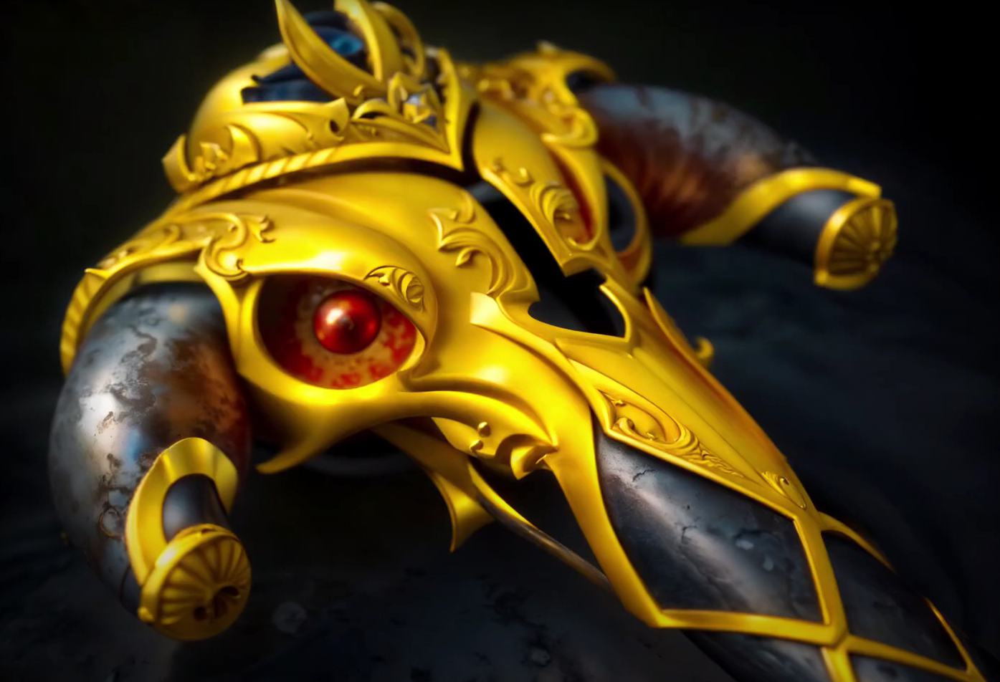
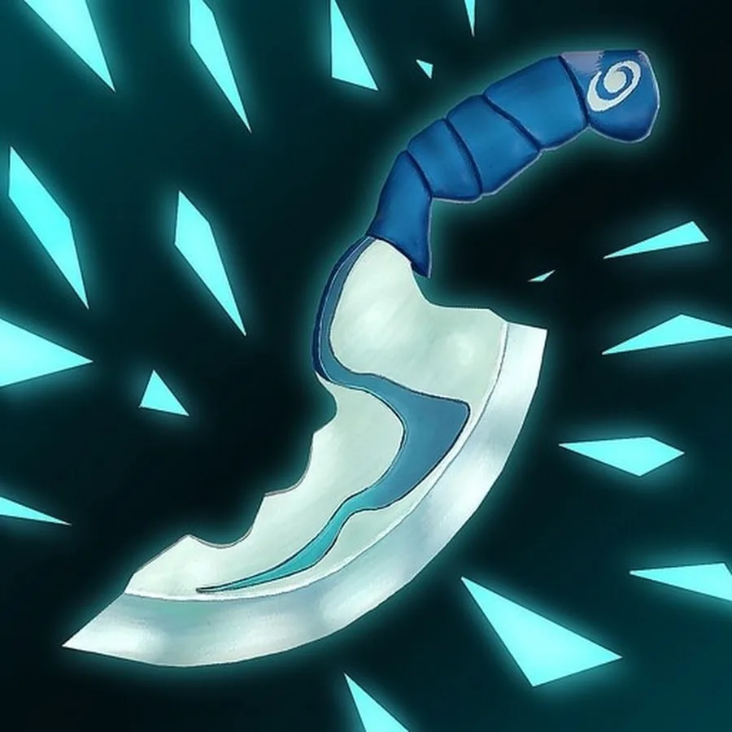
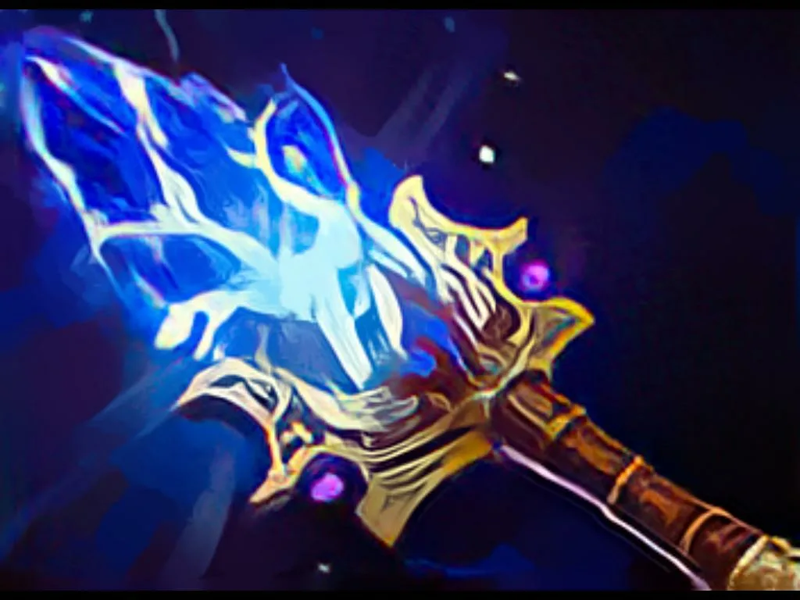
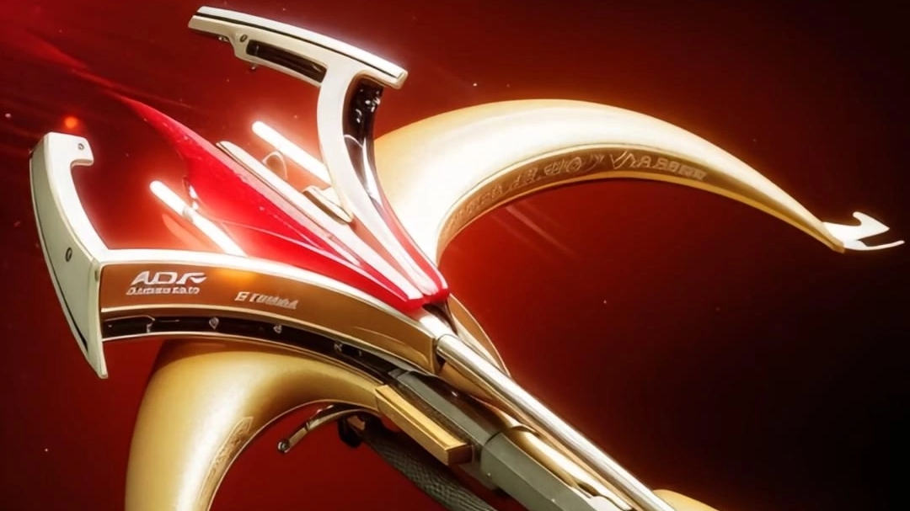

Популярные предметы
В Dota 2 существует огромное количество предметов, которые могут кардинально изменить ход игры. Ниже представлены некоторые из самых известных и полезных артефактов.
| Изображение | Предмет | Цена | Описание |
|---|---|---|---|
|  | Black King Bar | 4050 | При активации дает невосприимчивость к большинству заклинаний и 100% сопротивление магическому урону. |
|  | Blink Dagger | 2250 | Мгновенно телепортирует героя на небольшое расстояние. Нельзя использовать, если вы недавно получали урон. |
|  | Aghanim's Scepter | 4200 | Улучшает одну из способностей героя или добавляет новую. Эффект уникален для каждого персонажа. |
|  | Daedalus | 5150 | Дает шанс нанести критический удар, который наносит огромный физический урон. |